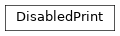
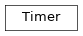

cxflow.utils¶
Functions¶
parse_arg(): Parse CLI argument in formatkey[:type]=valueto(key, value)load_config(): Load config from YAMLconfig_fileand extend/override it with the givenadditional_args.config_to_file(): Save the given config to the given path in YAML.config_to_str(): Return the given given config as YAML str.parse_fully_qualified_name(): Parse the given fully-quallified name (separated with dots) to a tuple of module and class names.create_object(): Create an object instance of the given class from the given module.list_submodules(): List full names of all the submodules in the given module.find_class_module(): Find sub-modules of the given module that contain the given class.get_class_module(): Get a sub-module of the given module which has the given class.
-
cxflow.utils.parse_arg(arg)[source]¶ Parse CLI argument in format
key[:type]=valueto(key, value)Parameters: arg ( str) – CLI argument stringReturn type: Tuple[str,Any]Returns: tuple (key, value[:type])
-
cxflow.utils.load_config(config_file, additional_args)[source]¶ Load config from YAML
config_fileand extend/override it with the givenadditional_args.Parameters: Return type: Returns: configuration as dict
-
cxflow.utils.config_to_file(config, output_dir, name='config.yaml')[source]¶ Save the given config to the given path in YAML.
Parameters: Return type: Returns: target path
-
cxflow.utils.config_to_str(config)[source]¶ Return the given given config as YAML str.
Parameters: config ( dict) – configuration dictReturn type: strReturns: given configuration as yaml str
-
cxflow.utils.parse_fully_qualified_name(fq_name)[source]¶ Parse the given fully-quallified name (separated with dots) to a tuple of module and class names.
Parameters: fq_name ( str) – fully qualified name separated with dotsReturn type: Tuple[Optional[str],str]Returns: Noneinstead of module if the given name contains no separators (dots).
-
cxflow.utils.create_object(module_name, class_name, args=(), kwargs=mappingproxy({}))[source]¶ Create an object instance of the given class from the given module. Args and kwargs are passed to the constructor.
This mimics the following code:
from module import class return class(*args, **kwargs)
Parameters: Returns: created object instance
-
cxflow.utils.list_submodules(module_name)[source]¶ List full names of all the submodules in the given module.
Parameters: module_name ( str) – name of the module of which the submodules will be listedReturn type: List[str]
-
cxflow.utils.find_class_module(module_name, class_name)[source]¶ Find sub-modules of the given module that contain the given class.
Moreover, return a list of sub-modules that could not be imported as a list of (sub-module name, Exception) tuples.
Parameters: Return type: Returns: a tuple of sub-modules having the searched class and sub-modules that could not be searched
-
cxflow.utils.get_class_module(module_name, class_name)[source]¶ Get a sub-module of the given module which has the given class.
This method wraps utils.reflection.find_class_module method with the following behavior:
- raise error when multiple sub-modules with different classes with the same name are found
- return None when no sub-module is found
- warn about non-searchable sub-modules
Note
This function logs!
Parameters: Return type: Optional[str]Returns: sub-module with the searched class or None
Classes¶
DisabledLogger: Entirely disable the specified logger in between__enter__and__exit__.DisabledPrint: Disable printing to stdout by redirecting it to/dev/nullin between__enter__and__exit__.Timer: Simple helper which is able to measure execution time of python code.
-
class
cxflow.utils.DisabledLogger(name=None)[source]¶ Bases:
objectEntirely disable the specified logger in between
__enter__and__exit__.Usage¶with DisabledLogger('my_logger_name'): # any logging actions with the my_logger_name will be ignored pass

-
__weakref__¶ list of weak references to the object (if defined)
-
-
class
cxflow.utils.DisabledPrint[source]¶ Bases:
objectDisable printing to stdout by redirecting it to
/dev/nullin between__enter__and__exit__.Usage¶with DisabledPrint(): # any print commands here will be redirected to /dev/null pass
-
__weakref__¶ list of weak references to the object (if defined)
-
-
class
cxflow.utils.Timer(name, profile)[source]¶ Bases:
objectSimple helper which is able to measure execution time of python code.
Usage¶profile = {} with Timer('my_work', profile): # my commands here pass
-
__exit__(*args)[source]¶ Stop measuring time and append the time span from
_starttoendto the_profileunder the_nameentry.
-
__weakref__¶ list of weak references to the object (if defined)
-